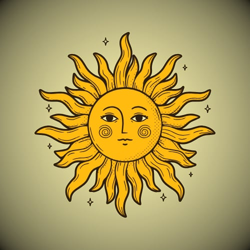
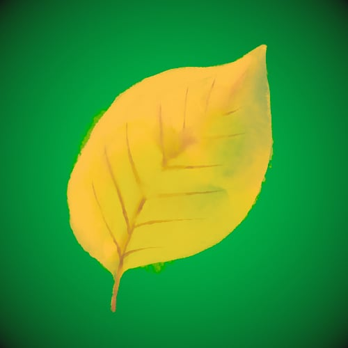
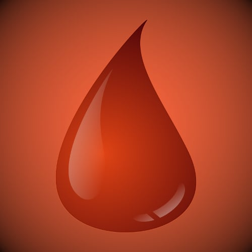
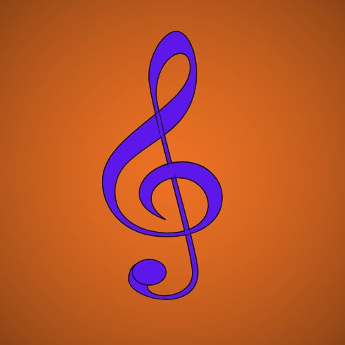

The Arcane Arts of Eldoria
Welcome to the magical heart of Eldoria. Here you'll uncover the ancient
spells that shape the world — from radiant blessings of Luminaris to the
chilling charms of Cryonis.
Each incantation is a whisper of power, drawn from the elemental force
of Aetherium, which is the power source of every
magic.
Choose wisely, for every spell comes with its own story, strength, and
sacrifice...
Magic Schools
Luminaris

- Description: Harnesses radiant energy to heal wounds, shield allies, and repel darkness.
- Meanning: School of Light
- Type: Healing, protection, blessings
- Style: Golden, resplendent, holy symbols
- Disciples: Clerics, Paladins
Tenebris
- Description: Masters the unseen, conjures illusions, and communes with death itself.
- Meanning: School of Dark
- Type: Illusion, debuffs, curses
- Style: Dark, black, banshee howl, menace, fear
- Disciples: Necromancers, Warlocks
Pyrosis

- Description: Unleashes searing flames and vulcanic power; beautiful and devastating.
- Meanning: School of Fire
- Type: Fireballs, explosions, firewalls
- Style: Golden-red ignition, destruction, chaos
- Disciples: Wizards, Pyromancers
Cryonis
- Description: Commands frost, with razor-sharp icicles, slowing motion, freezing enemies.
- Meanning: School of Ice
- Type: Frost shields, ice bolts, freezing
- Style: Ice blue, snow, cryogenics
- Disciples: Wizards, Cryomancers
Naturalis

- Description: Channels primal forces: forests, storms, plants and creatures heed its call.
- Meanning: School of Nature
- Type: Wasp swarm, thorned vines, lightning bolts
- Style: Green, nature, harmony
- Disciples: Different types of Druids
Imperis
- Description: Disrupting, countering, dictating the flow of battle and even time before a spell.
- Meanning: School of Control
- Type: Countermagic, time manipulation, spell negation, binding
- Style: Silver-blue elegance, control
- Disciples: Chronomancers, Judges
Special Aetherium users
Corruptis
- Description: It's the twisted mirror of life, contains spores, toxins, disease, and the relentless march of rot.
- Meanning: Subschool of Naturalis
- Type: Fungal infestation, rat control, spore clouds, decay, contagion
- Style: Necrotic vines, toxic, plague
- Disciples: Rot druids
Fabricatis
- Description: Not magic in the strictest sense — fuse arcane energy for crafting mechanical, magical gears.
- Meanning: School of Crafted Magic
- Type: Craft golems, artifacts, enchant weapons, armors, repairing
- Style: Metal, steampunk, constructs
- Disciples: Artificers
Vitalis
- Description: Not magic in the strictest sense — born from willpower and discipline.
- Meanning: Stamina based attributes
- Type: Berserk, stealth, resistance, endurance
- Style: Vitality, strength
- Disciples: Barbarians, Rogues
Sanguis

- Description: Manipulates blood for gentle or terrible purposes. A school of passion, lifegain or sacrifice.
- Meanning: School of Blood Magic
- Type: Blood pacts, Bleed dry, Lifedrain, Healing wounds
- Style: Life manipulation, sacrefice
- Disciples: Sangromancers, Vampires
Mortis
- Description: Ancient and forbidden school of necromancy, drawing power from death.
- Meanning: The School of Death
- Type: Reanimate, Soul-bindings, Control Undead, Fear
- Style: Undeads, tombs, immortality
- Disciples: Necromancers
Sonoris

- Description: The arcane discipline of sound, resonance, and music. It channels magic through instruments.
- Meanning: School of Sound and Song
- Type: Soundwaves, anthems, persuasion, mind-control
- Style: Instruments, rhythm, music
- Disciples: Bards, Sonic Mages